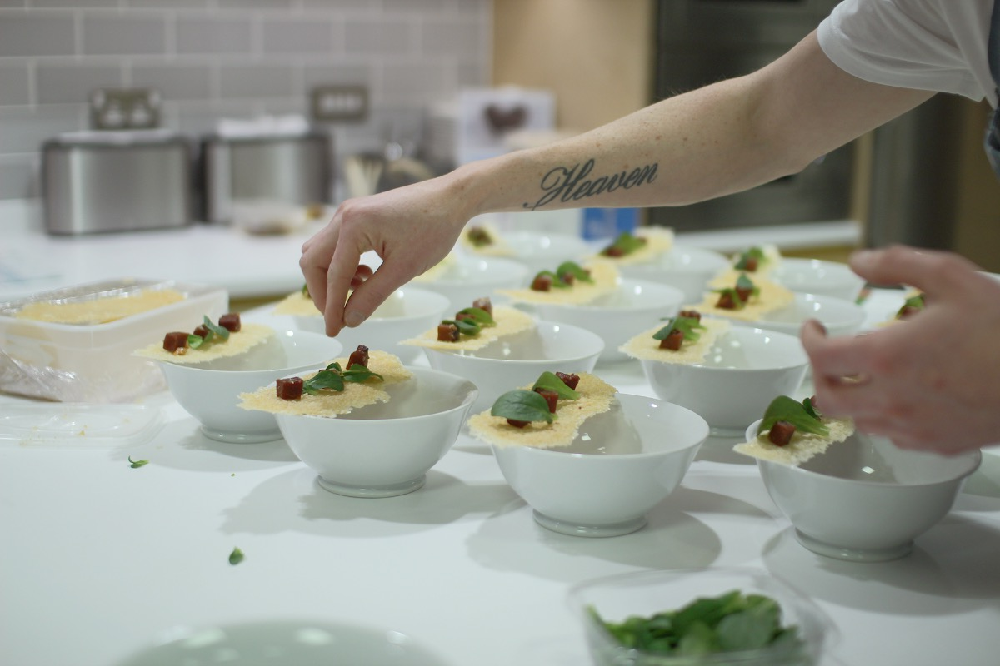
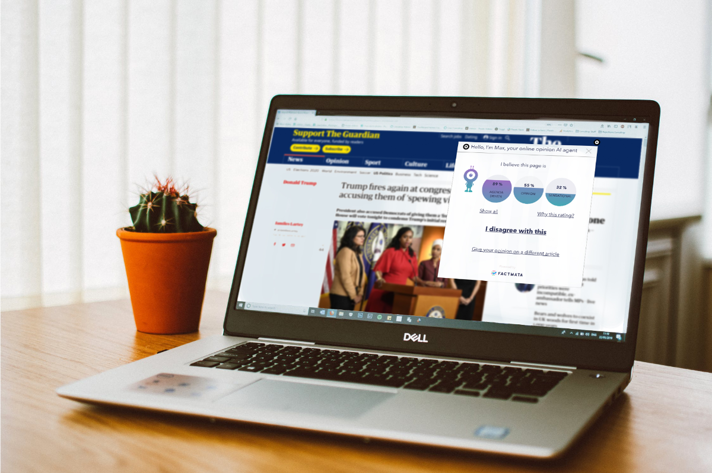
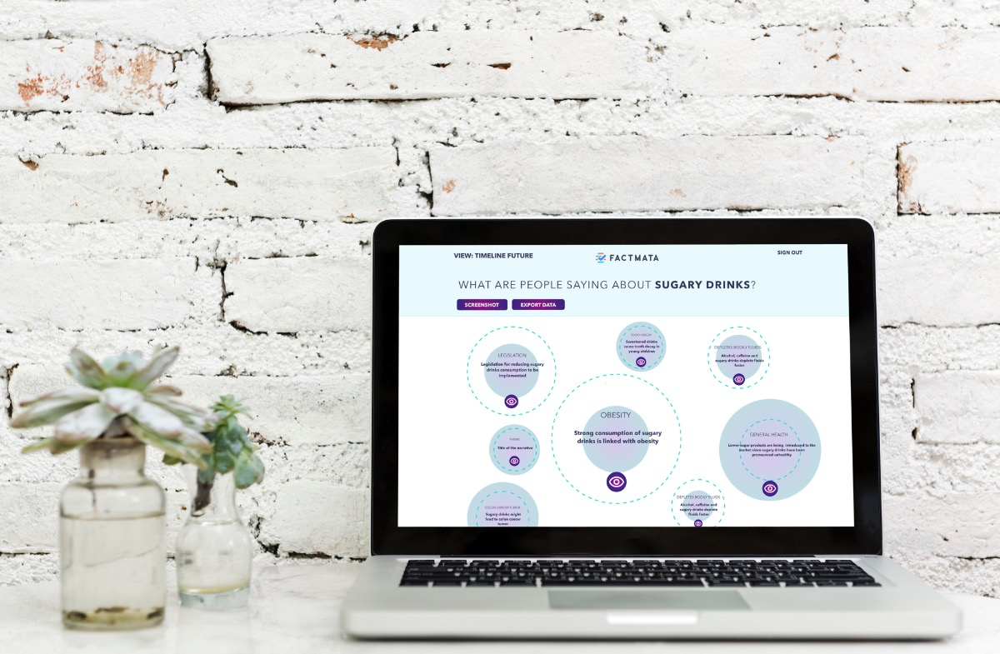
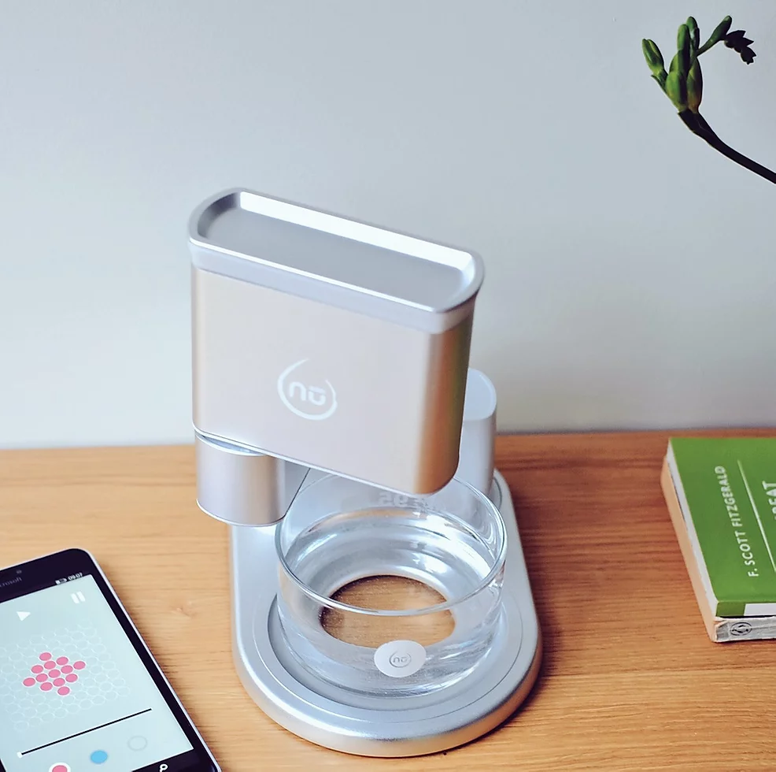
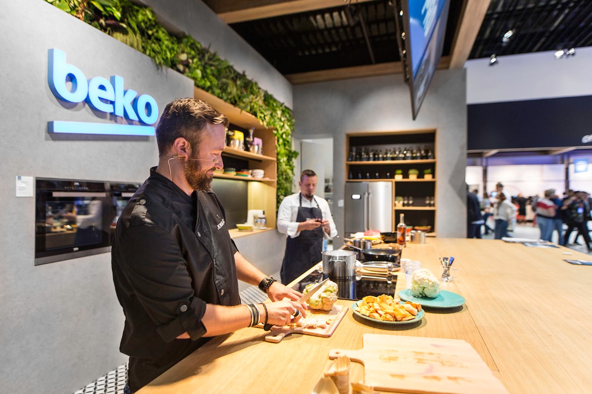
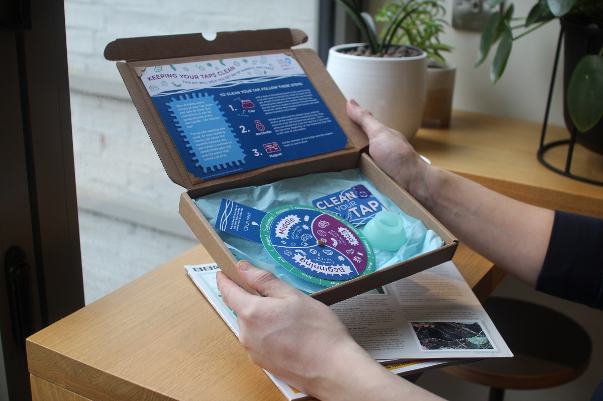
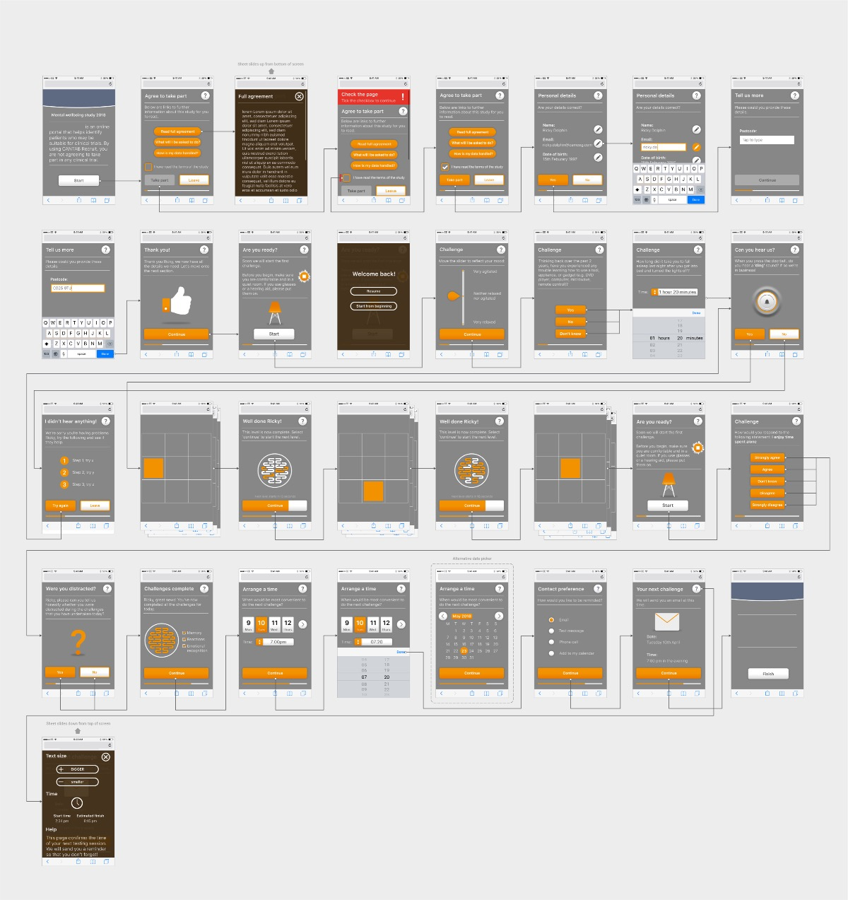
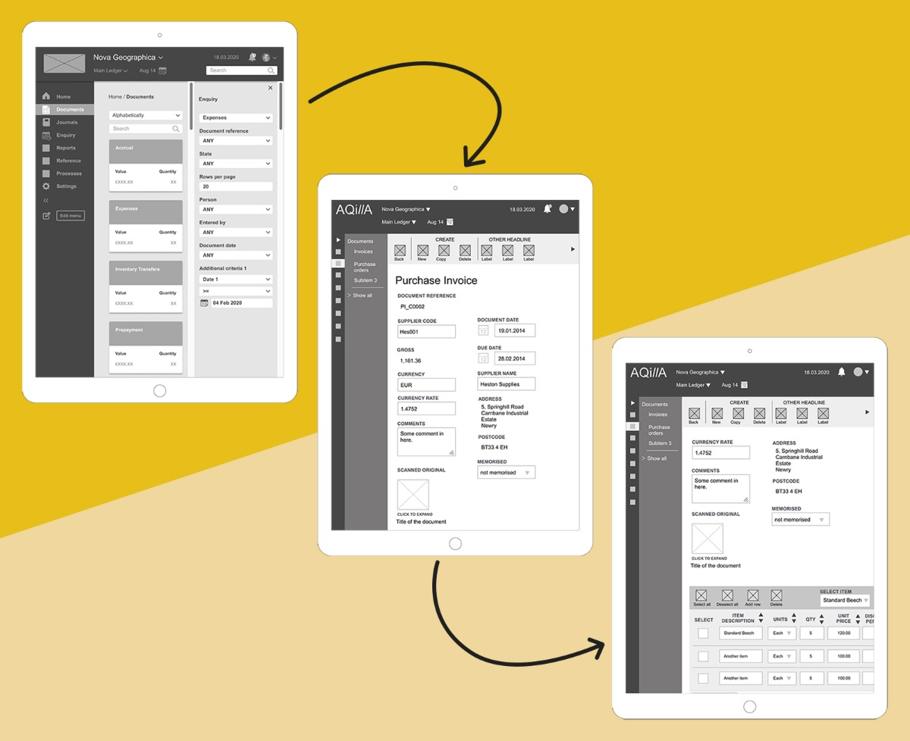

Leading a Design & Innovation Consultancy for 12 Years


Organisations had ideas and engineers, but no path from one to the other
Across the sectors I worked in - AI, healthcare, food tech, water, industrial systems - I kept seeing the same gap. Organisations had technology, ambition, and smart people, but the path from "interesting idea" to "product that customers actually adopt" was unreliable. Experiments stalled. Pilots never made it to scale. Engineering teams built things business teams couldn't use; business teams commissioned things engineering teams couldn't ship.
What was missing wasn't more design, or more research, or more strategy in isolation. It was a partner who could hold all three at once - map a business process end to end, reimagine it with new technology, prototype the reimagined version fast enough to test, and shepherd it through the change management that makes adoption real.
That's the gap Dovetailed filled for twelve years.
Founder, CEO, and Creative Director - from 2 people to 15+
I founded Dovetailed in Cambridge in 2011 and led it for twelve years. My role spanned everything: shaping the commercial strategy, winning client relationships, directing creative and research work, building and mentoring the team, and keeping the studio financially healthy across two continents. I grew the team from a two-person operation to 15+ multidisciplinary staff spanning UX and service designers, user researchers, industrial designers, software and hardware engineers, food scientists, and business strategists.
Across that time I led or directed more than a hundred client engagements - some lasting a few weeks, some lasting years. Clients ranged from very early-stage startups to FTSE and Fortune 500 enterprises in sectors including AI, health and medical devices, food tech, water, industrial systems, and consumer products. The common thread: they came to us because they needed something new and needed it to work, and they trusted us to drive the work end to end.
Three disciplines, held together by one team
Over the years I refined a way of working that deliberately collapsed the walls between strategy, research, and design. Clients didn't have to manage a strategy firm, a research firm, and a design firm separately - or hope the handoffs worked. One team did all three, and measured success on whether the resulting product or service actually got adopted.
Commercial strategy, vision and positioning, opportunity mapping, and business transformation. The work that decides what to build and why.
Mixed-method user research, end-to-end process mapping, service blueprinting, and reimagining how work actually flows when new technology is introduced.
Rapid prototyping across software, hardware, and service layers - turning reimagined processes into things you can try, test, and iterate on in weeks.
The method mattered: we held these three together across every engagement. Strategy without research produces confident nonsense. Research without design produces reports that nobody uses. Design without commercial grounding produces beautiful things that never ship. Integrating them was how we moved clients from pilot to adoption at pace.
From experimentation to scaled adoption
Most innovation work fails at the seams between phases. Pilots never get productionised. Production never gets adopted. We built Dovetailed's offering around those seams - not the pretty demo, but the full pipeline from opportunity to adoption.
Mixed-method research, process mapping, and stakeholder alignment to identify where new technology would actually create value - and where it wouldn't. The goal was to kill bad ideas early so we could spend client budget on the right ones.
Facilitated structured experiments and prototypes that tested the riskiest assumptions in weeks, not quarters. Often hands-on workshops with client teams so the learning stayed inside the organization.
Took validated pilots and hardened them into products or services - shaping roadmaps, interaction details, engineering specs, and the internal operating model needed to run the new thing.
The unglamorous part that decides whether any of it matters. Training users, championing the work inside the client organization, and supporting the operational change that turns a launch into a business outcome.
A sample of what twelve years produced
Risk Analysis Portal - Cambridge University Centre for Risk Studies
Designed and built the digital platform the Centre uses to analyse and assess global risk scenarios. A high-stakes, data-dense product where the research challenge was making complex risk modelling legible to analysts and decision-makers without oversimplifying the underlying models.
Human-compatible AI - Secondmind & Amazon
For Secondmind, designed the user-facing interfaces for their machine-learning systems, with human compatibility as the organising principle - an early version of the human-in-the-loop thinking I now lead at AWS. For Amazon, developed "Trajectories," a service concept combining emotional intelligence with AI to shape next-generation customer experiences.

Fighting misinformation at scale - Factmata
Two back-to-back engagements with Factmata: first, a platform for analysing patterns in public opinion at scale; second, a system to detect and categorise fake news. Both required translating ML model outputs into interfaces that analysts and newsroom operators could actually trust and act on.
Behavioral change in enterprise data - Cambridge University Information Services
Applied nudge theory and behavioral psychology to reshape how staff across a major university made data management decisions. A textbook transformation problem: the technology existed, the gap was in how people actually used it day to day.

nūfood - inventing a new product category
Dovetailed's most visible output: the world's first liquid-based 3D food printer. From hackathon concept to a working product exhibited across Europe and featured in the Financial Times, BBC World, The Spoon, and Digital Trends. See the dedicated case study for the full story - and for what this kind of integrated team can do when pointed at a genuinely new problem.

Reinventing consumer experiences - Beko, Microsoft & more
Re-imagined the future of food preparation, cooking, and storage with Beko as a combined physical and digital kitchen experience. Designed Smorgasbord, a flagship digital experience for Microsoft. Across both, the method was the same: deep user research, rapid prototyping, and service design that held the physical and digital layers together.


Service design for regulated sectors - Anglian Water & Cambridge Cognition
Designed a physical behavior-change intervention with Anglian Water to shift household water usage habits - a service-design problem disguised as a product. For Cambridge Cognition, built the digital platform used to run cognitive assessment testing for clinical research, where the hard part was mapping the real protocol end to end and respecting regulatory constraints without slowing clinicians down.

Enterprise software redesign - Aqilla
Led the complete UX redesign of Aqilla's financial accounting platform - taking a feature-dense legacy tool and giving it an interface that finance teams could actually move through quickly. A reminder that "transformation" often looks like careful, disciplined work on a product people already depend on.
Twelve years, hundreds of projects, six sectors
- Founded, scaled, and led Dovetailed from 2011 to 2023 across offices in the UK and US
- Grew the team from 2 to 15+ multidisciplinary staff spanning design, research, engineering, and food science
- Led or directed 100+ client engagements across AI, financial risk, health, food tech, water, industrial, and consumer sectors
- Named clients included Amazon, Microsoft, Beko, Anglian Water, Secondmind, Factmata, Aqilla, Cambridge University Centre for Risk Studies, Cambridge Cognition, and Cambridge University Information Services
- Award-winning studio - Smart Kitchen Startup Show winner, international press coverage, and regular speaking slots at design and innovation conferences
- nūfood featured in the Financial Times, BBC World, The Spoon, and Digital Trends; exhibited at food and design events across Europe
- Self-funded across twelve years - no outside capital - through consulting revenue and selective product work
- Deep client relationships that generated multi-year engagements and significant repeat business
What twelve years of innovation consulting taught me
The most important thing Dovetailed taught me is that innovation isn't a creative problem - it's a commercial and organizational one. The ideas are usually the easy part. The hard part is identifying the right opportunity, framing it so a business can actually fund it, running experiments that produce honest answers, and then doing the patient change-management work that turns a successful pilot into an adopted product. The teams that win at this aren't the ones with the best ideas. They're the ones who can hold the whole pipeline - discovery, experimentation, incubation, adoption - as one piece of work.
I also learned that integrated teams outperform siloed ones at a scale that's genuinely hard to believe until you've seen it. A researcher, a service designer, a commercial strategist, and an engineer sitting in the same room, working on the same problem, iterating daily, will outproduce and outdeliver a relay of specialists every single time. My job as founder was to protect that integration - commercially, culturally, and operationally.
Much of what I do now at AWS, and the way I think about agentic AI transformation, is rooted directly in what Dovetailed taught me about how real organizations actually absorb new technology.